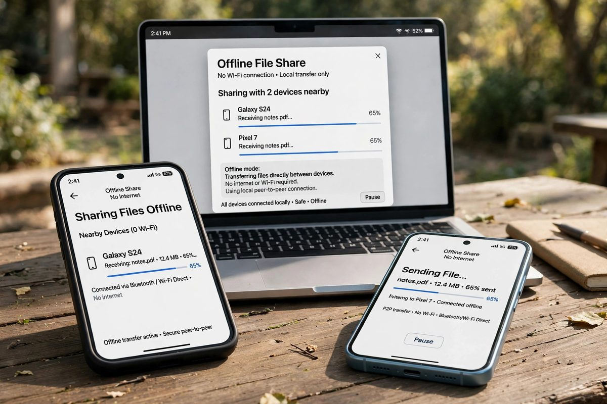

Home > Guides > How to Share Files Without Internet: Offline Methods That Work
How to Share Files Without Internet: Offline Methods That Work
A practical guide from PairDrop.

There are many moments when the internet is not available: a flight, a rural area, a building with weak signal, or a data allowance that has run out. Sharing a file should not have to wait for a connection. Fortunately, phones and computers have several built-in ways to move files directly from one device to another without any internet at all. The trick is knowing which method your devices support and preparing it before you need it. This guide explains the offline options that actually work, how to set each one up, and what to do when a transfer stalls. Keep it bookmarked for the next time you are offline and in a hurry.
Bluetooth: slow but almost always available
Bluetooth is built into almost every phone and laptop, so it is the most universal offline option. Turn Bluetooth on both devices, pair them once, then share a file from your gallery or file manager and choose the paired device. It works well for documents, a few photos and small audio files. It is not a good choice for long videos, because Bluetooth is slow and a 500 MB video can take a very long time. Keep the devices close together, within a few metres, and keep the screen awake. If pairing fails, remove the old pairing on both devices and pair again from scratch. Bluetooth is best treated as a reliable backup, not as your first choice for large files.
Wi-Fi Direct and local hotspots: fast offline transfers
Wi-Fi Direct lets two devices connect to each other directly, without a router. Many phones include it in the share menu under names such as Nearby Share, Quick Share or Wi-Fi Direct. The transfer uses Wi-Fi radio speeds, so large videos move far faster than over Bluetooth. A personal hotspot is a similar trick: one phone creates a local Wi-Fi network and the other device joins it, even with mobile data turned off. Once connected, use a local sharing tool or a file manager that supports Wi-Fi transfer. The devices do not need internet, only a local connection between them. Test this once at home so you know exactly where the button is before you need it in the field.
A cable and a USB drive: the dependable offline fallback
When wireless methods fail, a cable or a USB drive almost never does. A USB cable moves files between a phone and a computer with no network at all. A USB flash drive with the right adapter can carry files between phones, tablets and computers, and it is useful when the two devices cannot see each other wirelessly. Copy the files to the drive, plug it into the second device, and copy them off. Keep a small adapter in your bag if you travel often. This method is also useful for very large files, because there is no wireless signal to drop halfway through and no battery drain from a long radio transfer.
Prepare before you go offline
Offline sharing works best when you prepare in advance. Pair the devices once while you still have time, update the sharing app, and make sure both devices have enough battery and free storage. Check that the receiving device has room for the file before you start, because a transfer that fails at 95 percent for lack of space wastes time and patience. If you share files offline regularly, agree on one method with the people you work with, so nobody has to learn a new tool in a hurry. A short test transfer at home, with a real file, tells you more than any guide can.
Quick tips
- Pair devices once while you still have time
- Test the method at home before you need it
- Check free storage before a large transfer
- Keep a small USB adapter in your bag
Frequently asked questions
What is the fastest offline way to share a large video?
Wi-Fi Direct or a local hotspot transfer is usually fastest, followed by a USB cable. Bluetooth is the slowest option and is best kept for small files only.
Can I share files offline between Android and iPhone?
Yes, but it takes more care. Bluetooth file transfer between them is limited, so a local hotspot with a sharing app, a cable to a computer in the middle, or a USB drive usually works better.
Do offline transfers use mobile data?
No. Bluetooth, Wi-Fi Direct and cables use no mobile data. A hotspot transfer also uses no data if mobile data is off, because the devices only talk to each other locally.